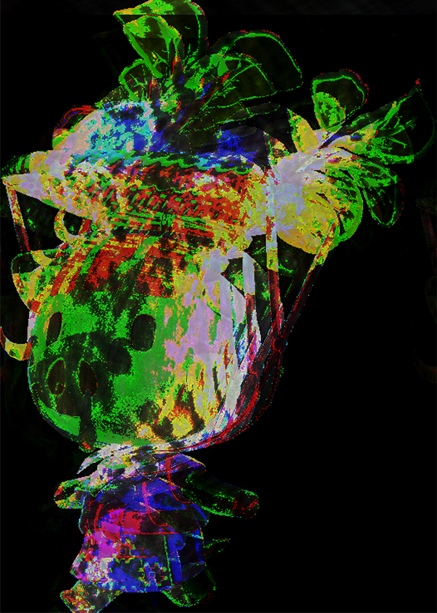

|
Two contrasting images of a notable character, Tom Nook from Animal Crossing, showcasing his side of being a corrupt capitalist. Although, Tom Nook is a beloved character and is seen as innocent; it is in fact a mask to hide his true nature. This piece reflects current society's corruption due to capitalism. Each capitalist has two sides where one they can show the public, whereas the other is hidden through that facade. |
|
Tom Nook Night And Day Text Editor + Audacity 2023 This piece discusses the topic of having a stalker. In the game, Skipper will appear randomly during Easter Season and will just stand there watching you. He will stand still at a distance until you decide to go up to him. This character exhibits signs of being a stalker and confirms the terror of not being able to fully be freed from them. |
|
|  |
Skipper the Stalker Bunny Audacity 2023 This piece reveals another dark truth of the game where the character Daisy Mae, who is a child, is subjected to child labor. She comes every Sunday to sell stocks, under the pretext that she "helps" her grandmother. This opens the conversation about what society really understands and how child labor can stem from even within a family. Society turns a blind eye to these cases, because we believe that "as a family" we have a duty to help one another without asking questions. |
| Daisy Mae Work Another Day Audacity 2023 |